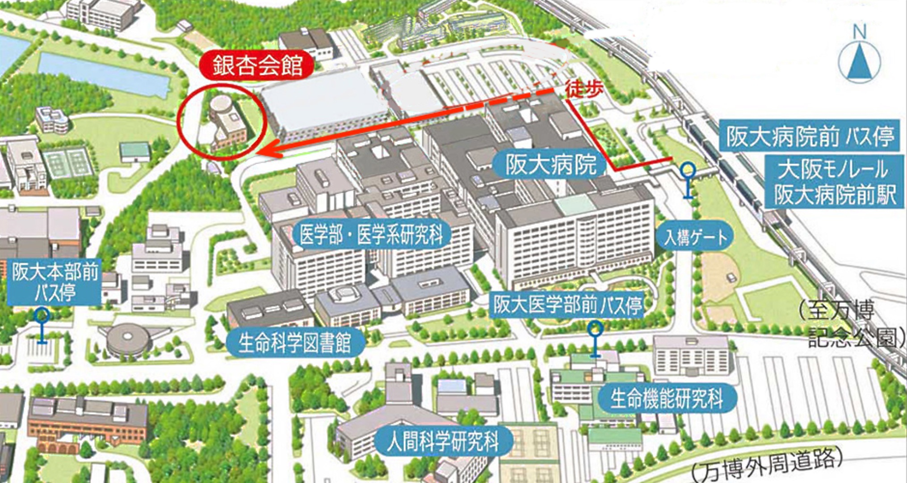
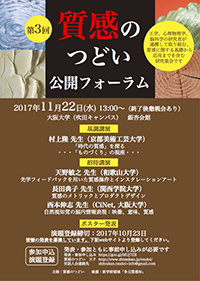

イベント
平成29年度イベント（第３回公開フォーラム）
| 日時 | 2017年11月22日（水） １３時〜（終了後懇親会あり） |
|---|---|
| 会場 | 大阪大学（吹田キャンパス）銀杏会館 https://www.office.med.osaka-u.ac.jp/icho/icho-jp.html  |
| フライヤー |
 クリックするとpdfで開きます |
プログラム
プログラム詳細（PDFファイル、1.5MB、11月14日更新）
※基調講演、招待講演の詳細はこちらをご覧ください。
12:00~13:00 受付、ポスター掲示13:00~13:05 開会の辞
13:05~13:50 特別講演
村上隆 先生（京都美術工芸大学）
「時代の質感」を探る
・・・「ものづくり」の視座・・・
13:50~14:20 招待講演
天野敏之 先生（和歌山大学）
「光学フィードバックを用いた質感操作とインスタレーションアート」
14:20~16:20 ポスター発表・デモ発表、コーヒーブレイク
プログラム詳細（PDFファイル、1.5MB、11月14日更新）をご覧ください 16:20~16:50 招待講演
長田典子 先生（関西学院大学）
「質感のメトリックとプロダクトデザイン」
16:50~17:20 招待講演
西本伸志 先生（CiNet, 大阪大学）
「自然視知覚の脳内情報表現：映像、意味、質感」
17:20~17:25 閉会の辞、ポスター発表・デモ発表終了
17:30~ 懇親会
参加について
当日参加受け付けを行います。直接お越しください。参加費：無料（懇親会参加の場合は，実費5,500円）
事前参加登録（10月31日まで）
申し込みサイト：https://goo.gl/MUj7ZB
ポスター発表・デモ発表申込み
※発表申込みは締め切りました
申し込みサイト：https://goo.gl/MUj7ZB
「質感のつどい」について
質感のつどいホームページ：https://www.shitsukan.jp/tsudoi/
多元質感知ホームページ：http://www.shitsukan.jp/ISST/
第３回公開フォーラム実行委員
鯉田孝和(実行委員長)・溝上陽子(副実行委員長)・岩井大輔・川嵜圭祐・小松英彦・
佐々木耕太・佐藤いまり・澤山正貴・永井岳大・西田眞也・日浦慎作・和田有史
世話人会連絡先：shitsukan.tsudoi+info@gmail.com